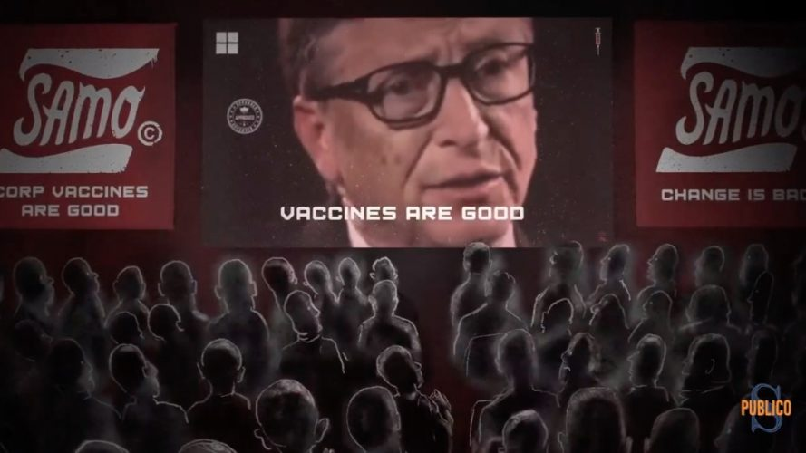

¿Qué hay detrás de las vacunas de Bill Gates?¿Por qué gasta tanto en promoción como en investigación?
Bill Gates está en el ojo del huracán.El cofundador de Windows se ha convertido en uno de los protagonistas de la actualidad desde el inicio de la pandemia.Fue el primero en alertar sobre ella en 2015, 5 años antes de la catástrofe.
Además el multimillonario ha puesto todo su empeño y fortuna en encontrar la vacuna contra el coronavirus.A través de su fundación Bill y Melinda Gates han aportado más de 300 millones de dólares para apoyar la investigación del virus y el desarrollo de una vacuna que insistido en que debe ser de alcance universal.
Pero como casi siempre ocurre con los filántropos que vienen a salvar el mundo, no es oro todo lo que reluce y a la que rascas un poco empiezan a florecer asuntos turbios.
Cada vez son más los que acusan a Gates de tener oscuras intenciones con esta nueva vacunación universal, con la que pretende pinchar a cada habitante del planeta.Algunos de los que se oponen a la vacuna de Gates argumentan que su verdadera intención es reducir la población mundial o que pretende introducir microchips en nuestro cuerpo mediante la punción de estas vacunas.
Gente tan relevante como Robert F. Kennedy Jr, sobrino del presidente Kennedy (asesinado en circunstancias aún no aclaradas) acusa a Bill Gates de tener complejo de mesías y de experimentar con las vidas de seres humanos pobres y de querer disminuir drásticamente la población en Áfica y la India.Ponen como ejemplo que el gobierno de la India habría expulsado de su país a la Fundación de Gates tras descubrir que habían usado como cobayas humanas, con dramáticas consecuencias, a 24.000 adolescentes indios en la investigación de la vacuna contra el papiloma humano.Claro que hay quien dice que esta información no es del todo cierta y que se trata de un ataque gratuito contra el magnate americano.
Por otra parte desde los círculos cercanos al presidente Trump acusan a Bill Gates de usar la pandemia en contra de la administración estadounidense y del partido republicano.De hecho el anterior presidente americano, el demócrata Barack Obama ya advirtió (o amenazó según algunos) sobre la pandemia.¿es casualidad que se haya hecho realidad durante el mandato de su máximo rival?
Algunos republicanos van más allá y como Roger Stone, un cercano asesor de Trump acusan a Gates de querer implantar microchips en las personas a través de la vacuna que el mismo desarrollaría para frenar la pandemia.Esos microchips se activarán a través de tecnología 5G.Y así lograrían controlar a la humanidad.
De hecho esto es algo que replicaría la forma en la que Bill Gates se hizo multimillonario en los 90, creando virus informáticos que afectaban a los sistemas operativos que él mismo vendía, para después vender antivirus o programas inmunes a esos virus.Pues ahora sería lo mismo con humanos, infectarnos para luego vendernos la vacuna.
Esto puede sonar descabellado para mucha gente, y ciertamente no hay datos concluyentes para determinar que Gates está detrás de un diabólico plan para acabar con parte de la población mundial o controlarnos con microchips.Pero es importante no confiar ciegamente en la buena voluntad de los poderosos.¿No les resulta sospechoso que la fundación de Gates haya gastado 250 millones de dólares en que los medios hablen positivamente de su vacuna?Recordamos que la inversión de Gates en la investigación de la propia vacuna es de 300 millones.Estamos hablando de que ha destinado casi tanto dinero en desarrollar la vacuna como en promocionarla y hacer publicidad de ella.¿Qué hay detrás de tanto interés en que sea su vacuna la que llegue al organismo de todas las personas del mundo?
Seguiremos informando
Posted On: 2020-08-29T00:00:00

Content Date: 2020-08-29
Download Date: 2021-05-30
Document ID: L0C04CK4B